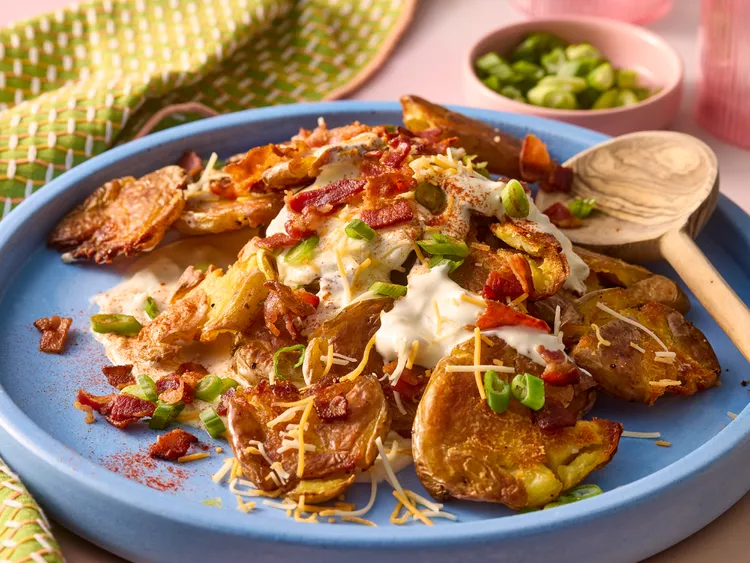

Loaded Smashed Potato Salad

Description
Meet the perfect potato salad to bring along wherever you're going this summer. Toss together roasted, smashed potatoes with all the "loaded" fixings—from sour cream to bacon—for a creamy, satisfying dish. It packs well in the cooler, too.
ingredients
Main Ingredients
- 1.5–2 lb (700–900 g) baby potatoes (yellow or red)
- 1–2 tablespoons olive oil
- Salt and black pepper
Loaded Toppings
- 6–8 slices cooked bacon, crumbled
- 1 cup shredded cheddar cheese
- 2–4 green onions, sliced
- Fresh chives, chopped (optional)
Dressing
- ½ cup sour cream
- ¼ cup mayonnaise
- 1 tablespoon Dijon mustard
- 1 teaspoon garlic powder
Preparation
- Boil the baby potatoes until fork-tender.
- Drain and place the potatoes on a baking sheet.
- Gently smash each potato with the bottom of a glass or potato masher.
- Drizzle with olive oil and season with salt and black pepper.
- Bake at 425°F (220°C) until crispy and golden.
- Mix sour cream, mayonnaise, Dijon mustard, and garlic powder to make the dressing.
- Toss the crispy potatoes with the dressing.
- Top with bacon, cheddar cheese, green onions, and chives.
- Serve warm or chilled.